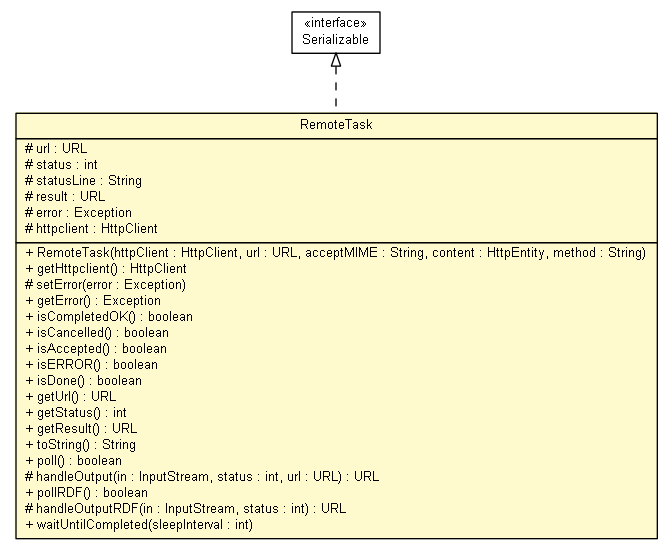

net.toxbank.client.task
Class RemoteTask

java.lang.Object
 net.toxbank.client.task.RemoteTask
net.toxbank.client.task.RemoteTask
- All Implemented Interfaces:
- Serializable
public class RemoteTask
- extends Object
- implements Serializable
Convenience class to launch and poll remote POST jobs
- Author:
- nina
- See Also:
- Serialized Form
url
protected final URL url
status
protected int status
result
protected URL result
error
protected Exception error
httpclient
protected org.apache.http.client.HttpClient httpclient
RemoteTask
public RemoteTask(URL url,
String acceptMIME,
org.apache.http.HttpEntity content,
String method)
throws org.opentox.rest.RestException
- Throws:
org.opentox.rest.RestException
getHttpclient
public org.apache.http.client.HttpClient getHttpclient()
setError
protected void setError(Exception error)
getError
public Exception getError()
isCompletedOK
public boolean isCompletedOK()
isCancelled
public boolean isCancelled()
isAccepted
public boolean isAccepted()
isERROR
public boolean isERROR()
isDone
public boolean isDone()
getUrl
public URL getUrl()
getStatus
public int getStatus()
getResult
public URL getResult()
toString
public String toString()
- Overrides:
toString in class Object
poll
public boolean poll()
- returns true if ready
- Returns:
handleOutput
protected URL handleOutput(InputStream in,
int status,
URL url)
throws org.opentox.rest.RestException
- Parameters:
in - status - url - the url contacted - for returning proper error only
- Returns:
-
- Throws:
ResourceException
org.opentox.rest.RestException
pollRDF
public boolean pollRDF()
handleOutputRDF
protected URL handleOutputRDF(InputStream in,
int status)
throws org.opentox.rest.RestException
- Throws:
org.opentox.rest.RestException
waitUntilCompleted
public void waitUntilCompleted(int sleepInterval)
throws Exception
- Throws:
Exception
Copyright © 2011 ToxBank project. All Rights Reserved.